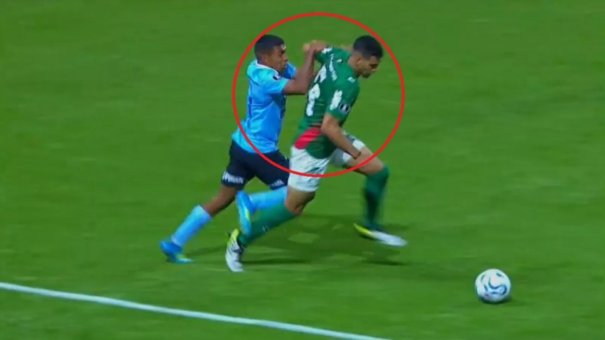

"Me voy, te dejo relatando a vos": Piero Maza protagoniza escándalo en Copa Libertadores tras cobro de penal
El árbitro chileno causó polémica por su decisión en el duelo entre Palmeiras y Sporting Cristal.

Un verdadero escándalo protagonizó el árbitro chileno Piero Maza en Copa Libertadores tras cobrar un polémico penal que le dio el triunfo 2-1 a Palmeiras sobre Sporting Cristal, por la segunda fecha del grupo F. ¿Qué ocurrió? Se jugaba el minuto 77 en el Allianz Parque de Sao Paulo cuando el lateral izquierdo de Palmeiras Arthur Gabriel cayó en el área rival tras una supuesta falta de Joao Cuenca, situación que no fue advertida de inmediato por el juez nacional, aunque sí fue llamado por el VAR. Mientras Maza observaba la jugada en la pantalla, el famoso relator argentino, Bambino Pons, decía en la transmisión de ESPN: "Si cobra penal me voy, te dejo relatando a vos (al comentarista Juan Manuel Herbella)… ¿Sabés que lo va a cobrar?". Si bien existió un contacto entre las piernas de ambos jugadores, en la repetición se observó que el mismo jugador del "Verdao" lo provocó.
¿QUÉ TE PARECE? Esto fue penal para Palmeiras ante Sporting Cristal 👀
— SportsCenter (@SC_ESPN) April 16, 2026
📺 Mirá TODA la CONMEBOL #Libertadores por #DisneyPlus Plan Premium pic.twitter.com/zeeiuq2meb
Y lo cobró. Maza pitó el penal en favor de Palmeiras, que José Manuel López convirtió en gol a los 80 minutos y le dio el triunfo a su equipo. La indignación de Pons contra Maza Tras ello, Pons arremetió contra el réferi chileno: "Penal para Palmeiras, se equivocó Piero Maza. Lo perjudica claramente a Sporting Cristal sea gol o no. Se dejó llevar por la gente, el VAR también. Díganme dónde está el penal". “Hay interpretaciones e interpretaciones. Se sabía que se iba a tirar. Lo han perjudicado a Sporting Cristal, y acá no somos hinchas de nadie. Palmeiras no necesita de esta ayuda. Te tira abajo una ilusión. Y creo que fueron cautos en su reclamo los jugadores de Cristal”, agregó. A su vez, el comentarista Juan Manuel Herbella también apuntó contra Maza: "Mira como tira los pies para atrás. Yo no veo el penal. Veo que se queda parado a propósito. (…) Hay contacto abajo, pero mira cómo deja la pierna a propósito".